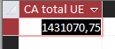
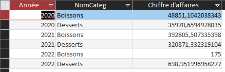
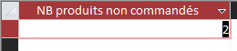
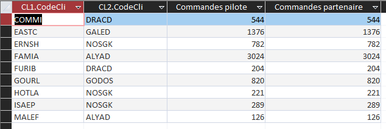

Nos indicateurs
Cette partie présente les quatre indicateurs calculés à partir de la base de données KDou. Chaque indicateur répond à une question liée à une réflexion sur l'entreprise.
Indicateur 2 : Chiffre d'affaires réalisé avec les fournisseurs de l'Union européenne
Réflexion : Dans le cadre d'une réflexion en lien avec l'origine de ses produits, nous voulons connaître le chiffre d'affaires total généré à ce jour avec les fournisseurs de l'Union européenne.
Requête SQL :
SELECT SUM(
DC.Quantité * Produit.CoutAchat * (1 - DC.[Remise (%)] / 100)
) AS [CA total UE]
FROM ((Pays INNER JOIN Fournisseur ON Pays.NoPays = Fournisseur.NoPays) INNER JOIN Produit ON Fournisseur.NoFour = Produit.NoFour) INNER JOIN DetailCommande AS DC ON Produit.RefProd = DC.[Réf produit]
WHERE Pays.UE = "Membre";
Résultat :

Indicateur 3 : Chiffre d'affaires annuel des desserts et des boissons
Réflexion : Dans le cadre d'une réflexion en lien avec la santé, nous voulons connaître le chiffre d'affaires généré chaque année (montant total des ventes) pour les catégories desserts ou boissons.
Requête SQL :
SELECT Year(C.DateCde) AS Année, Categorie.NomCateg, SUM(
DC.Quantité * Produit.CoutAchat * (1 - DC.[Remise (%)] / 100)
) AS [Chiffre d'affaires]
FROM ((Commande AS C INNER JOIN DetailCommande AS DC ON C.[N° commande] = DC.[N° commande]) INNER JOIN Produit ON DC.[Réf produit] = Produit.RefProd) INNER JOIN Categorie ON Produit.CodeCateg = Categorie.CodeCateg
WHERE Categorie.NomCateg In ("Desserts","Boissons")
GROUP BY Year(C.DateCde), Categorie.NomCateg;
Résultat :

Indicateur 4 : Nombre de produits carnés non commandés
Réflexion : Dans le cadre d'une réflexion en lien avec l'offre commerciale, nous voulons calculer le nombre de produits carnés qui n'ont actuellement fait l'objet d'aucune commande.
Requête SQL :
SELECT Count(P.RefProd) AS [NB produits non commandés]
FROM Produit AS P LEFT JOIN DetailCommande AS DC ON P.RefProd = DC.[Réf produit]
WHERE P.CodeCateg = 6
AND DC.[Réf produit] IS NULL;
Résultat :

Indicateur 5 : Comparaison des commandes des clients pilotes et partenaires
Réflexion : Dans le cadre d'une réflexion sur le partenariat client, nous voulons savoir si des clients pilotes d'un réseau partenaire ont autant de commandes que les clients partenaires.
Requête SQL :
SELECT CL1.CodeCli, CL2.CodeCli, Count(C1.[N° commande]) AS [Commandes pilote], Count(C2.[N° commande]) AS [Commandes partenaire] FROM ((Clientele AS CL1 INNER JOIN Commande AS C1 ON CL1.CodeCli = C1.CodeCli) INNER JOIN Clientele AS CL2 ON CL1.CodeCliPart = CL2.CodeCli) INNER JOIN Commande AS C2 ON CL2.CodeCli = C2.CodeCli GROUP BY CL1.CodeCli, CL2.CodeCli HAVING Count(C1.[N° commande]) = Count(C2.[N° commande]);
Résultat :
